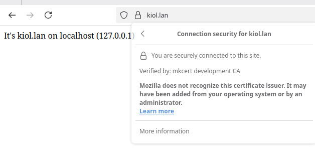
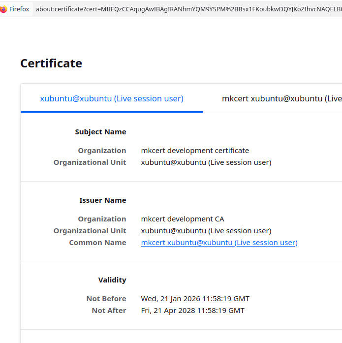

You typically see this help when FastXAMPPSsl failed to automatically add an SSL certificate to a site hosted on your localhost. This describes installation on Linux Xubuntu 22.04.
Installation
#1 # Installing mkcert
sudo apt install libnss3-tools
curl -s https://api.github.com/repos/FiloSottile/mkcert/releases/latest \
| grep browser_download_url.*linux-amd64 \
| cut -d '"' -f 4 \
| wget -qi -
mv mkcert-v*-linux-amd64 mkcert
chmod +x mkcert
sudo mv mkcert /usr/local/bin/
# Create a local CA
mkcert -install
# Create certificates for websites
#mkcert localhost
#mkcert "localhost" "*.localhost" "site1.local" "site2.local"
#mkcert site1.local
#mkcert site2.local
# And even like this:
mkcert hello.com
# Certificates automatically trusted in the system and browsers
If the files hello.com.pem and hello.com-key.pem were created in the directory where you launched the terminal, then everything is fine, and FastXamppSsl will be able to automatically add SSL certificates to subsequent localhost site creations,
by adding them to /opt/lampp/etc/extra/httpd-vhosts.conf.
Firefox 146.0 and Google Chrome in Xubuntu 22.04 have no issues with this certificate at all.

Displaying the mkcert certificate in Firefox 146.0

Example certificate data
Chromium is more demanding, but you can still download Google Chrome.